| # | picture | task and instruction | trials | status of each trial | best | last played |
|---|---|---|---|---|---|---|
| 1 |  | t01_hammer_nail | 0 | not played yet | — | — |
| 2 |  | t02_crack_walnut | 0 | not played yet | — | — |
| 3 |  | t03_paint_lid_shut | 0 | not played yet | — | — |
| 4 | 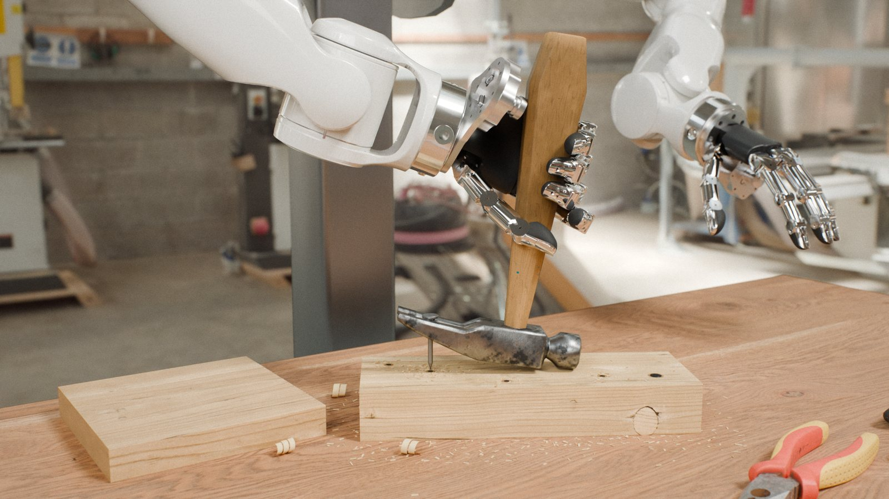 | t04_pull_nail | 0 | not played yet | — | — |
| 5 |  | t05_hang_hammer | 0 | not played yet | — | — |
| 6 |  | t06_hinge_screw | 0 | not played yet | — | — |
| 7 |  | t07_battery_cover | 0 | not played yet | — | — |
| 8 | 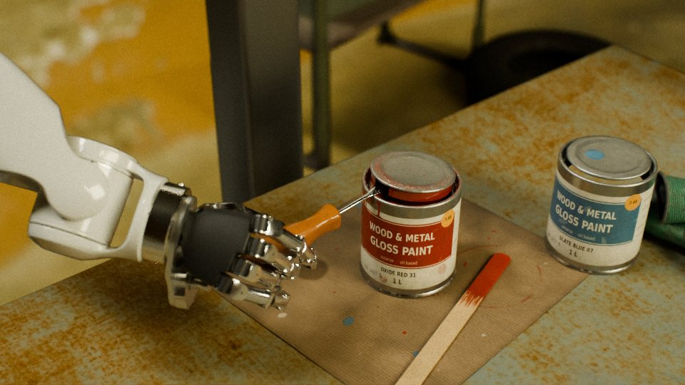 | t08_pry_paint_lid | 0 | not played yet | — | — |
| 9 |  | t09_valve_key | 0 | not played yet | — | — |
| 10 | 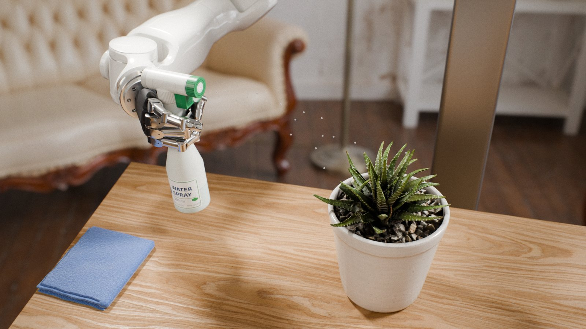 | t10_mist_plant | 0 | not played yet | — | — |
| 11 |  | t11_spray_mirror | 0 | not played yet | — | — |
| 12 |  | t12_bulb_table_lamp | 0 | not played yet | — | — |
| 13 |  | t13_bulb_vanity | 0 | not played yet | — | — |
| 14 |  | t14_bulb_remove | 0 | not played yet | — | — |
| 15 | 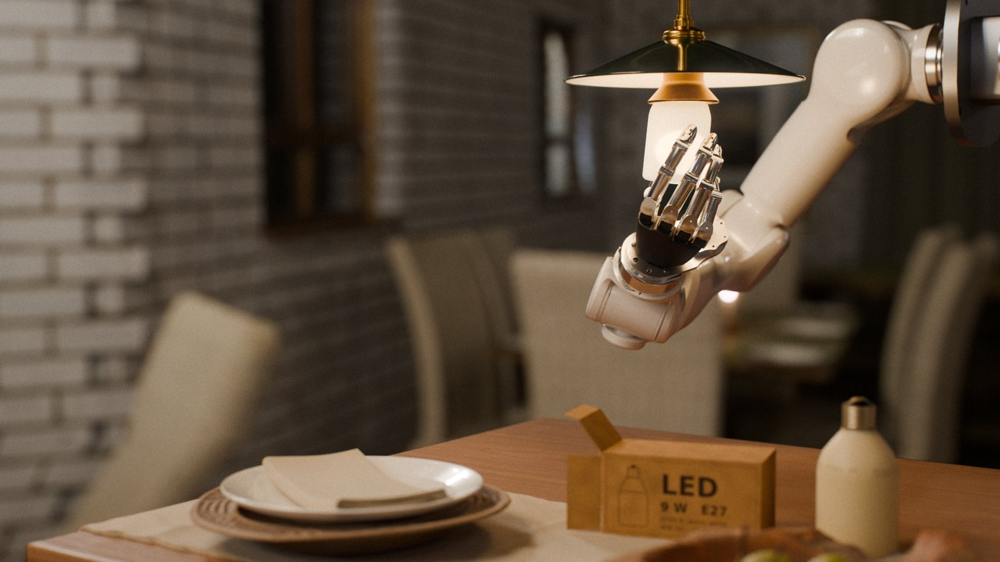 | t15_bulb_pendant | 0 | not played yet | — | — |
| 16 | 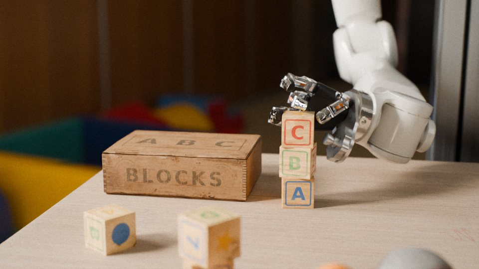 | t16_block_tower | 0 | not played yet | — | — |
| 17 |  | t17_shape_sorter | 0 | not played yet | — | — |
| 18 | 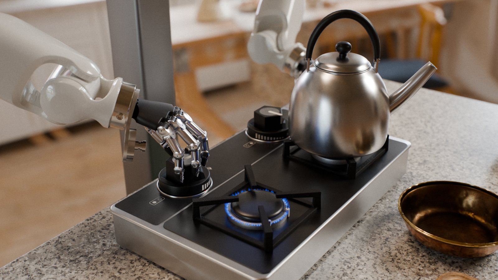 | t18_hob_knob | 0 | not played yet | — | — |
| 19 |  | t19_jar_drawerPut the cream jar in the drawer and close it. | 1 | 0: FAIL | FAIL | 2026-11-25 11:34 |
| 20 |  | t20_sink_plug | 0 | not played yet | — | — |
| 21 |  | t21_calendar_cube | 0 | not played yet | — | — |
| 22 |  | t22_seal_stamp | 0 | not played yet | — | — |
| 23 |  | t23_milk_microwave | 0 | not played yet | — | — |
| 24 | 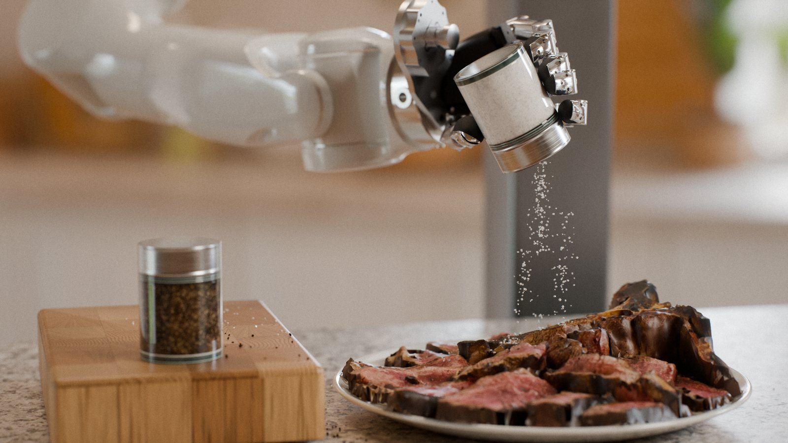 | t24_salt_shaker | 0 | not played yet | — | — |
| 25 |  | t25_fish_food | 0 | not played yet | — | — |
| 26 |  | t26_can_rack | 0 | not played yet | — | — |
| 27 |  | t27_paperweightPut the paperweight on the poster so it stops rolling back up. | 2 | 0: FAIL 20: FAIL | FAIL | 2026-11-25 11:30 |
| 28 |  | t28_can_bin | 0 | not played yet | — | — |
| 29 | 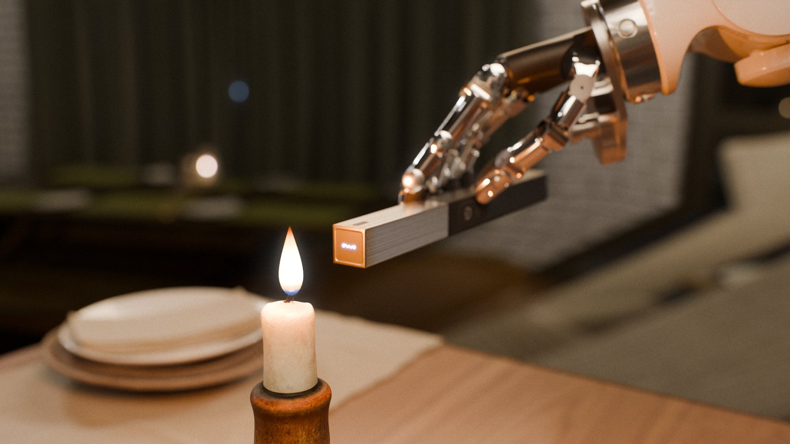 | t29_lighter_candle | 0 | not played yet | — | — |
| 30 | 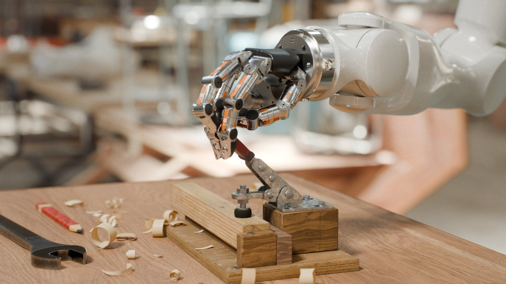 | t30_toggle_clamp | 0 | not played yet | — | — |
| 31 |  | t31_tube_lamp | 0 | not played yet | — | — |
| 32 |  | t32_umbrella_stand | 0 | not played yet | — | — |
| 33 |  | t33_candle_holder | 0 | not played yet | — | — |
| 34 |  | t34_crush_crackers | 0 | not played yet | — | — |
| 35 | 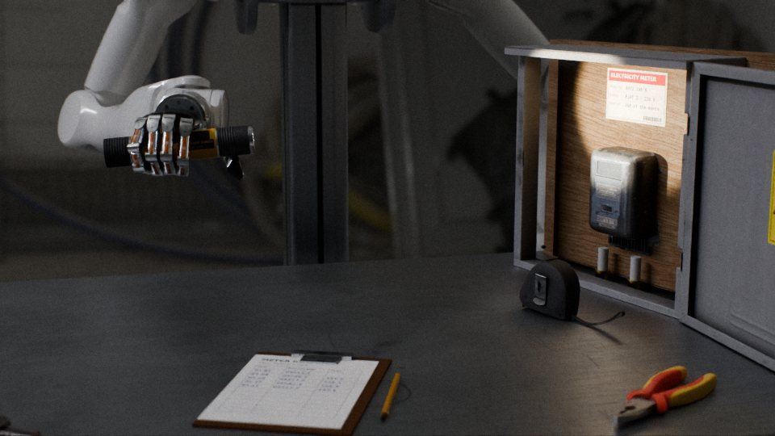 | t35_flashlightSwitch on the flashlight and shine it on the label. | 1 | 0: FAIL | FAIL | 2026-11-25 11:39 |
| 36 | 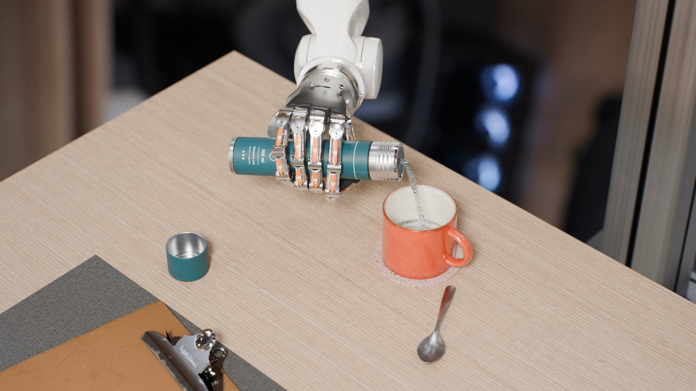 | t36_thermos_pour | 0 | not played yet | — | — |
| 37 |  | t37_box_cutter | 0 | not played yet | — | — |
| 38 |  | t38_tv_remote | 0 | not played yet | — | — |
| 39 |  | t39_whiteboard_erase | 0 | not played yet | — | — |
| 40 |  | t40_scrape_crumbs | 0 | not played yet | — | — |
| 41 |  | t41_power_stripSwitch on the power strip; the desk lamp should light. | 1 | 0: FAIL | FAIL | 2026-11-25 11:24 |
| 42 | 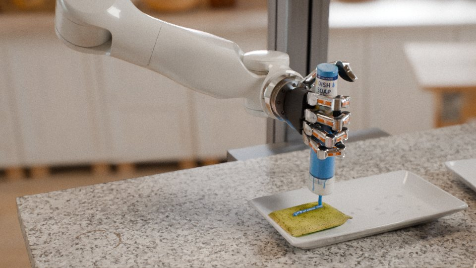 | t42_dish_soap | 0 | not played yet | — | — |
| 43 | 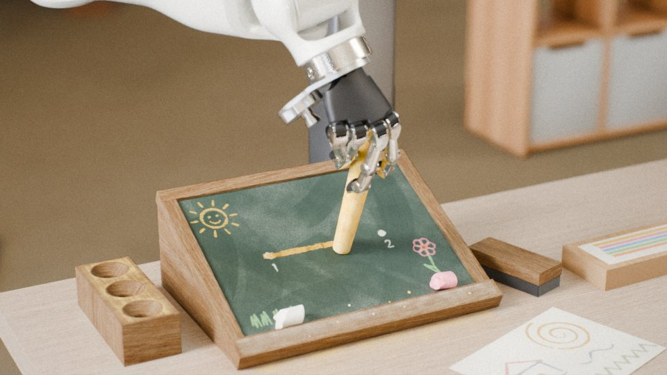 | t43_chalk_line | 0 | not played yet | — | — |
| 44 | 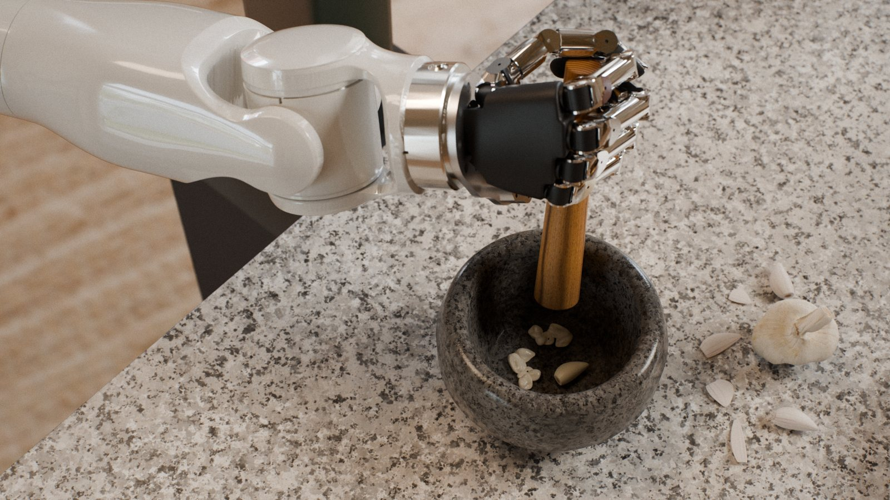 | t44_crush_garlic | 0 | not played yet | — | — |
| 45 | 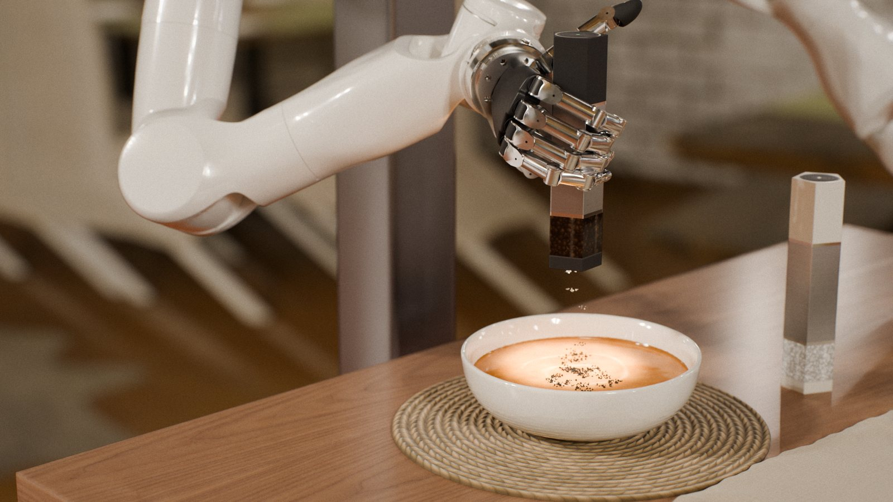 | t45_pepper_mill | 0 | not played yet | — | — |
| 46 | 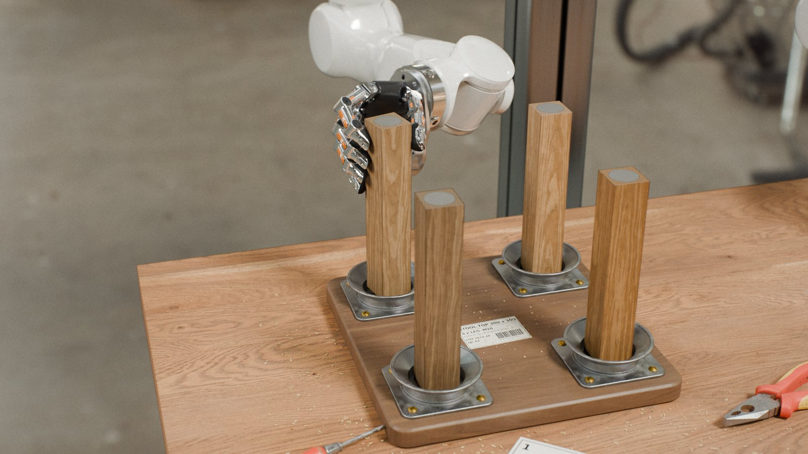 | t46_table_leg | 0 | not played yet | — | — |
| 47 |  | t47_level_shelf | 0 | not played yet | — | — |
| 48 |  | t48_wheel_chock | 0 | not played yet | — | — |
| 49 |  | t49_weigh_orange | 0 | not played yet | — | — |
| 50 |  | t50_toy_bowling | 0 | not played yet | — | — |